R1:
Rowley Lane/Rowley
Green Road junction (redeveloped), Arkley
51°38'51.12"N, 0°14'22.43"W
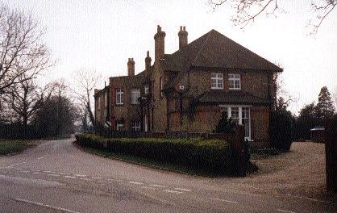
THE AVENGERS: Something Nasty in the Nursery
(James Hill: March 1967)
Dobson is chased into the house of General Wilmot, Arkley Bank, by a
menacing figure in a wheel chair.
DEPARTMENT S: Handicap Dead (John
Gilling:
Summer 1968)
Mrs Lynne races her car to Colindale Golf Course to see Johnnie Collins
tee off.
RETURN OF THE SAINT:
The Debt Collectors
(Leslie Norman: )
Simon races after the car carrying the kidnapped Jimmy as they leave
the racing circuit.
DEPARTMENT S: The Last Train to Redbridge
(John Gilling: 1968)
Annabelle (Rosemary Nicols), in her Vauxhall,
follows Clark (Derek
Newark) and his driver (Harvey Hall), in
their Vauxhall, to the
headquarters of Chymrochron as they deliver a tape to Draper. After her
first day posing as a secretary Annabelle leaves the offices and is met
by Sullivan also in a Vauxhall.
RETURN OF THE SAINT:
The Diplomat’s Daughter
(Charles
Crichton: 1978)
Simon Templar riding his bike, ST2, races after Marie who is driving
his Jaguar.
R2: Willow House, 38 Totteridge Common, Totteridge
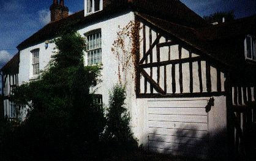
H. G. WELLS' INVISIBLE MAN:
Secret Experiment (Pennington Richards: 1958)
The invisible Peter Brady is dropped off by Diane (Lisa
Daniely) at
Crompton's house and sneaks inside when Crompton (Michael
Goodliffe)
opens the door. Diane returns later to find Brady. Brady arrives at the
house in Sir Charles' car and enters, Crompton dashes from the house as
the police arrive with Diane.
THE SAINT: The Miracle Tea Party (Roger
Moore: March 1964)
The Saint arrives in his Volvo at Aunt Hattie's house. Dr. Sandberg
notices the car when he takes Geraldine McLeod home and later returns
to kidnap her.
THE SAINT: The Saint Steps In (John
Gilling: March 1964)
Simon drives Madeline, in his Volvo, to Calvin Grey's house after the
Professor fails to answer their telephone calls.
THE SAINT: The Portrait of Brenda (John
Gilling: Summer 1968)
Simon Templar goes to the address given in the mysterious letter and
observes a postman (Harry Littlewood) delivering
the post.
R3: Totteridge Village,
Totteridge
51°37'56.46"N, 0°12'0.98"W
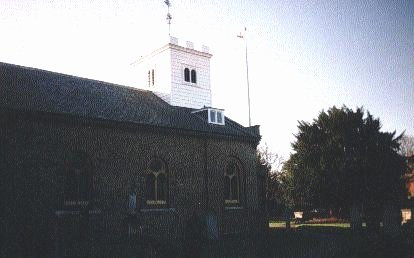
DANGER MAN: Whatever Happened to George Foster
(Don Chaffey March 1964)
John Drake pays a visit to Peter Jones’ home village and talks to the
local clergyman.
DANGER MAN: Colony Three (Don
Chaffey: July
1964)
Richardson (Peter Arne) shows Janet Wells (Catherine
Woodville), John
Drake (Patrick McGoohan) and James Randall (Glyn
Owen) around the
church (St. Andrew's Church) where Alan Bayliss is
buried. Richardson
takes the opportunity to tell Janet that she will be filling Bayliss'
position.
GIDEON'S
WAY: The Housekeeper
(Leslie Norman: 1965)
Electrician, Ralph Maricut (Harry Fowler) arrives
at the home of Mr.
Henderson (Devoran House, Lime Grove - redeveloped).
to do some work
and finds him dead in the bath. He runs to a neighbour’s house to use
the telephone. Martha Smallwood (Kay Walsh) arrives
back at the house
later that day to find the police waiting.
Mrs Warren (Kay Walsh) leaves Percy Whitehead’s house (Prestwood,
Lime
Grove - redeveloped). After a walk in the park Percy
Whitehead (Oliver
Johnson) arrives home. Mrs Warren arrives one day to find the
police
questioning all the single aged men in the area. The postman (Richard
Davies) is suspicious of Mrs Warren’s reaction the next time
he sees
her. Later, Detective Superintendent Warr (John Dearth),
Commander
Gideon (John Gregson) and Detective Chief Inspector
David Keen
(Alexander Davion) arrive in a police car to follow
up a report from
the local constable.
(Identified by Geoff Dodd, January 2024)
THE SAINT: The Fiction Makers (Roy
Baker:
June 1966)
Warlock's car drives past Long Pond as he takes Simon to visit
Hermetico.
THE SAINT:
The Time to
Die (Roy Baker: April 1968)
Simon arrives in his Volvo at the address he has been given by Charlie
Mason. He finds that he has been expected (Northbank,
Totteridge
Lane, demolished and redeveloped as 138 and 138a).
(Identified by Jeff Watson of the Behind the Camera Facebook
page,
August 2023)
RANDALL AND HOPKIRK
[DECEASED]: It's
Supposed to be Thicker Than Water (Leslie
Norman: Autumn
1968)
Jeff drops Fay Cracken off at her hotel, The Orange Tree public house.
RANDALL AND HOPKIRK
[DECEASED]: Whoever
Heard of a Ghost Dying? (Ray Austin: Late 1968)
Jeff's car follows Hellingworth's car to Marty's graveyard and passes
the gates of Pembury.
THE AVENGERS: Requiem (Don Chaffey:
January
1969)
Tara (Linda Thorson) is taken by Major Firth (John
Cairney), Jill
(Kathja Wyeth) and Lieutenant Barrett (Mike
Lewin) to the church where
Mother's funeral is taking place (St. Andrew's Church).
Film:
TASTE THE BLOOD OF DRACULA
(1969)
R4: St. Mary's Abbey, The Ridgeway, Highwood Hill
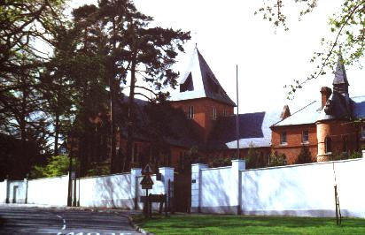
DEPARTMENT S: The Double Death of Charlie Crippen
(John Gilling: Autumn 1968)
The villain's van, followed by Stewart, Jason and Annabelle, drive past
on the way to the president's mansion.
R5: Nan-Clark's Lane, Highwood Hill
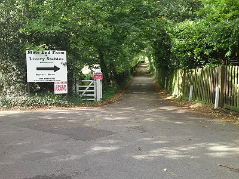
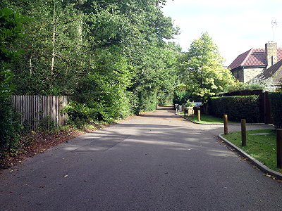
The Barn, Nan-Clark's Lane
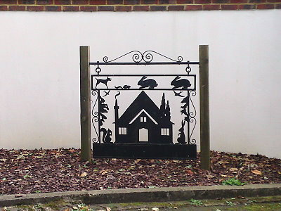
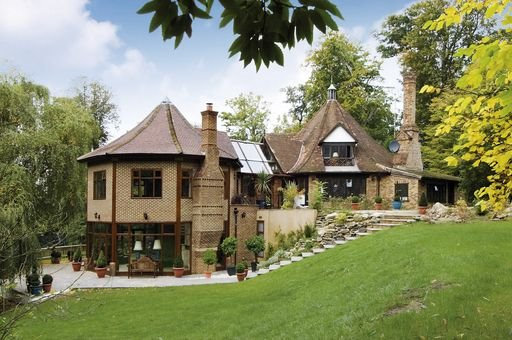
THE AVENGERS: My Wildest Dream (Robert
Fuest:
March 1968)
Steed and Tara arrive at Winthrop's cottage in Steed’s yellow Rolls
Royce after a tip-off.
(Identified by Geoff Dodd, September 2009)
Highwood Park House, Nan-Clark's Lane
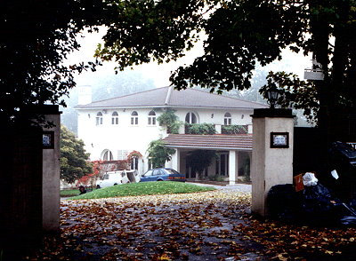
THE SAINT: The Damsel in Distress (Peter
Yates: Aug/Sep 1964)
The Vila Di Milo, where Guiseppe Rolfieri is in hiding near Florence.
THE SAINT: The Spanish Cow (John
Gilling:
April 1965)
The Saint's Volvo visits Donna Luisa's villa in the South of France.
THE BARON: Long Ago and far Away (Robert
Asher: March 1966)
John Mannering arrives at the villa of Ramon Petrarca looking for
Petrarca and Cordelia.
THE BARON: Time To Kill (Jeremy
Summers:
May 1966)
Christine leaves the house of Justo Vitale Christine in his white Jaguar
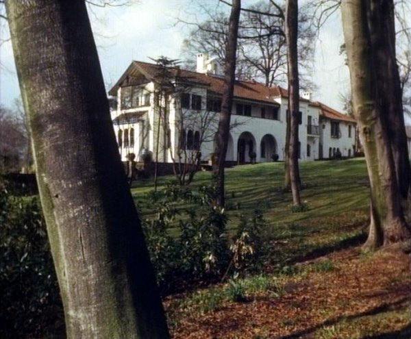
THE SAINT: Locate and Destroy (Leslie
Norman: July 1966)
Simon goes to visit Coleman's villa to investigate the man who's life
he has saved. Coleman (John Barrie) sees Simon off
when Karsh (Victor
Beaumont) arrives with news for Coleman. Instead of leaving
Simon parks
his car in the grounds of the house and waits for Coleman and Karsh to
leave in a Jeep before breaking into the house.
THE SAINT: When Spring is Sprung (Jim
O'Connolly: 1967)
Simon Templar is forced to drive to a villa near Nice by Joanne Dell.
It is here that he meets Colonel Hannerly.
THE AVENGERS: Who's Who??? (John
Moxey: April
1967)
Tulip (Peter Reynolds) soon arrives at The Manor
House, Hambledon after
spotting Steed’s car (parked outside the entrance to The
Barn).
Doctor V Krelmar’s home, The Manor House, Hambledon. From inside the
house Steed and Mrs Peel watch as Lola parks the Lotus Elan by Steed’s
Bentley and makes her way towards the house. Mrs Peel, posing as Lola,
fetches Basil back to the house in her Lotus and soon afterwards Major
B’s men arrive in their car. After escaping from Tulip in the Bentley,
the transformed Steed and Mrs
Peel escape drive out of London pursued by Tulip in his car, They
manage to shake him off in the winding country lanes.
(Identified by Geoff Dodd, September 2009)
DEPARTMENT S: The Treasure Of The Costa Del Sol
(John Gilling: September 1968)
Helen is followed to Camilo's house by Jason King who is then chased
off the grounds by a guard dog. The following day Stuart and Annabel go
to the house posing as American tourists.
JASON KING: A Deadly Line in Digits (Jeremy Summers: 1970)
JASON KING: Wanna Buy a Television Series?
(Roy Ward Baker: 1970)
Jason King follows the young man as he drives his Land Rover from the
bar across the Greek island to Umberto Bellini's villa. Later that
night Jason breaks into the villa. The following day Bellini and Jason
are watched as they go to check on the hidden loot buried nearby.
INSPECTOR MORSE:
Greeks Bearing Gifts
(Paul Wheeler: 1990)
Morse (John Thaw) goes to visit Digby Tuckerman at
his home, but he
meets Mrs Tuckerman (Rosalind March) in the indoor
pool instead.
Tuckerman (James Hazeldine) arrives later and is
interviewed by Morse
about the two murders.
Television:
JONATHAN CREEK: The Curious tale of Mr Spearfish
(1999)
R6: Junction of Barnet Road and Rowley Green Road, Arkley
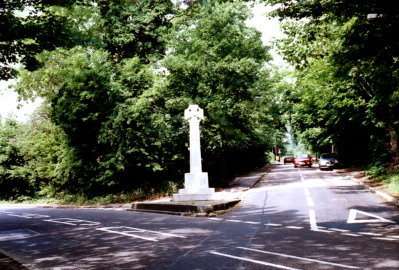
DEPARTMENT S: The Duplicated Man (Paul
Dickson: Spring 1969)
As Annabelle Hurst makes her way to see Mrs Harvey at the 'Lucy
Williams Home' for retired gentlewomen she is followed by two Russian
agents.
R7: The Gate, Barnet Road
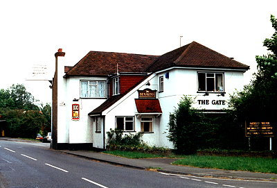
DEPARTMENT S: Handicap Dead (John
Gilling:
Summer 1969)
Mrs Lynne races past the pub on her way to Colindale Golf Course to see
Johnnie Collins tee off.
R8: Normandy Avenue, Barnet
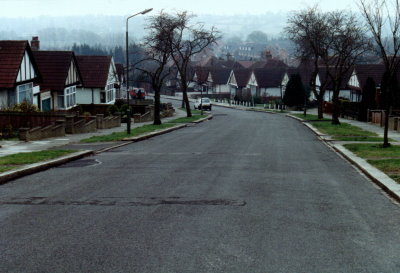
THE CHAMPIONS: The Ghost Plane (John
Gilling:
July 1967)
Craig Sterling (Stuart Damon), one of the
Champions, prevents a
delivery
van running over a group of children when its breaks fail.
THE CHAMPIONS: The Fanatics (John
Gilling: July 1967)
Craig Sterling (Stuart Damon), one of the
Champions, prevents a
delivery
van running over a group of children when its breaks fail.
R9: Totteridge Lane, Barnet
51°38'0.74"N, 0°12'39.87"W
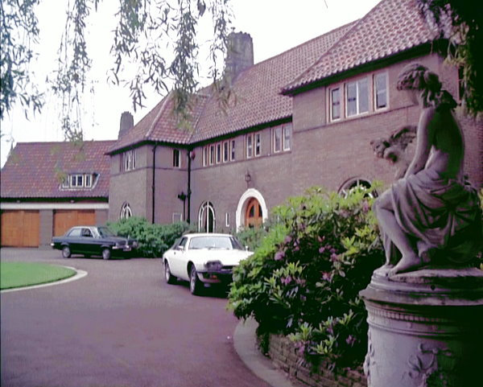
RETURN OF THE SAINT:
Collision Course Part One: The Brave
Goose (Cyril Frankel: 1978)
Simon Templar (Ian Ogilvy) gives Annabel West (Gayle
Hunnicutt) a lift
back to her home in his Jaguar after the inquest. Later that day
Annabel receives some unexpected news from Mr. Franklyn (Wensley
Pithy)
while Mrs Cloonan (Peggy Thorpe-Bates) serves them
tea by the pool.
(Ken Baker and Malcolm Christopher on DVD commentary courtesy
of
Umbrella Entertainment)
R10: Mill Hill School, The Ridgeway
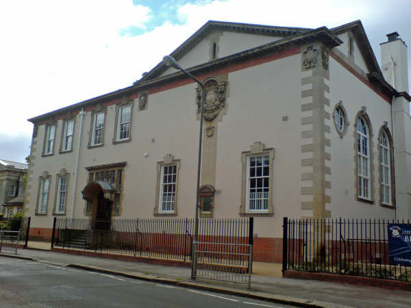
THE SAINT: The Saint Plays with Fire
(Robert S. Baker: 1963)
Simon drives, Jackman, to the inquest into the death of John Kennet.
(Identified by Geoff Dodd, September 2007)
R11: Totteridge Park, Totteridge Common (just west of Horseshoe Lane)


photos: Geoff Dodd
THE AVENGERS: Return of the Cybernauts
(Robert Day: June 1967)
John Steed arrives in his Bentley at High Pines, Eddington to interview
Hunt, the solicitor, Dr. Armstrong's lawyer. Unfortunately Bronson
(Frederick Jaeger) is already there with a cybernaut.
(Identified by Geoff Dodd, February 2009)
R12: Totteridge Common at the junction with Chestnut Lane
THE SAINT: The Scorpion (Roy
Baker:
December 1963)
Eddie arrives on his bike at the home of “The Scorpion” (The
Scorpion's
house had been demolished).
(Identified by Geoff Dodd, March 2010)
R13: Hendon Wood Lane
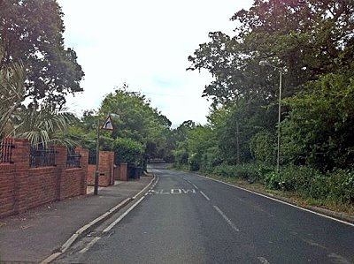

DEPARTMENT S: The Shift That Never Was (John
Gilling: Autumn 1968)
Stewart Sullivan and Jason King drive to the Northover Atomic Power
Station in the hope of finding Annabelle.
(Identified by Geoff Dodd, July 2010)
DEPARTMENT S: Les Fleurs du Mal (Cyril
Frankel: Early 1969)
Weber and his men go in search of Johnny’s secret with Stuart Sullivan
in tow. They find themselves close to Per le Chaise cemetery. The
police are not far behind with Jason and Annabelle (footage
filmed at
same time as above).
(Identified by Geoff Dodd, July 2010)
R14: 'Lorraine' (Hyver Manor), Hyver Hill, Sterling Corner
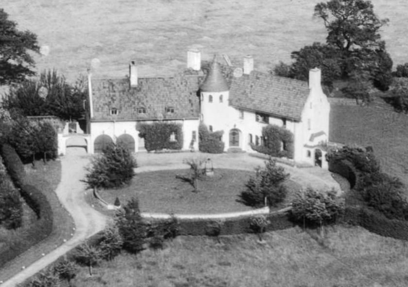
THE VISE: Cross Channel
(Ernest Morris: 1955)
The Coleman hotel.
MARK SABER aka THE VISE aka
UNCOVERED: Hear No Evil
(Ernest Morris: 1958)
The home of the invalid Miriam Booth which she shares with her
relations.